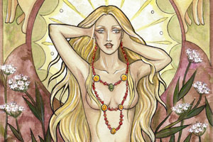
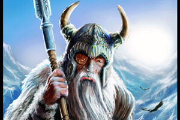
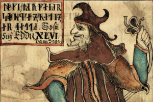

|  | Freya was the goddess of love, sex, beauty, and gold. She rides a chariot pulled by cats. |
|  | Odin was a high-positioned god associated with many things. He took half of those who died in battle to his afterlife kingdom, Valhalla. The other half were taken by Freya to Folkvangr. |
|  | Loki is a shapeshifter who sometimes assisted the gods and sometimes worked against them. Due to this behavior, he is often seen as a god of chaos. |